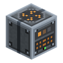
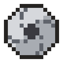

リサイクラー
alaindustrial:recycler
概要
リサイクラーはゴミを食べる LV マシンです。石、土、余った道具、板材、チェストの整理で出た雑多 なもの——何でも受け付け、確認も求めません。その代わりにバッチを溜め、満ちたところで スラグブリケットを鋳造します。
このマシンの肝心な規則：ブリケットの品位を決めるのはバッチの「量」ではなく「多様さ」です。 丸石 1 スタックと土 1 スタックは質量カウンターにとって同じなので、質量だけを見るリサイクラーは 同じゴミを運び続けることを奨励してしまいます。ここでは混ぜるほど得をします——鉱物系のゴミ、金属 くず、可燃物をおおよそ均等に入れると高品位スラグ、つまり後の物質生産が求めるものが出ます。
ミニ例： 丸石を 16 個続けて入れるとバッチが満ちて低品位スラグが出ます。ブロックにもでき ますし、燃料にもなります。石・不要になったツルハシ・板材を数枚混ぜれば、同じバッチが
高品位を鋳造します。
⚠️ リサイクラーは入れられたものを、貴重品も含めてすべて破壊します。 フィルターは意図的に ありません。パイプの配線を間違えれば、ダイヤ装備一式がその代償です。これは不具合ではなく仕様です。
エネルギー
| 項目 | 値 |
|---|---|
| 内部バッファ | 800 EU/FE |
| 最大入力 | 32 EU/FE/t（LV） |
| 稼働時消費 | 8 EU/FE/t |
エネルギーは 5 つの作業面から入ります。正面は不活性で、ケーブルは接続できません。
処理
マシンは1 操作につき 1 個を粉砕し、その質量をバッチに加えます。バッチがしきい値に達すると ブリケットが出ます。
| 項目 | 値 |
|---|---|
| 1 操作の長さ | 基本 40 ティック（2 秒）、刃の品級で変化 |
| バッチのしきい値 | 質量 64 |
| バッチあたりの費用 | 質量による。ブロック 16 個のバッチは鉄の刃で 5120 EU/FE、焼入れ 3584、ダイヤモンド 2560 |
| 自動排出 | なし |
アイテムの質量は種類で決まります：
| 入れたもの | 質量 |
|---|---|
| 道具・武器・防具——まとまった一個の品 | 8 |
| ブロック | 4 |
| ふつうのアイテム | 2 |
| マシンが知らないもの | 1 |
区分は連鎖で判定します：まず素材タグ、次にブロックの音、最後に「その他」。「その他」は質量 には入りますが多様さには数えません——さもないと未知のゴミ 1 スタックが混合を偽装し、最良の品位 をただで手に入れられてしまいます。
| バッチの構成 | 出るもの |
|---|---|
| 1 区分が 80 % 以上 | 低品位スラグ |
| 2 区分が実用的な比率 | スラグ |
| 3 区分すべてがあり、どれも半分を超えない | 高品位スラグ |
インベントリ
| スロット | 受け付けるもの | 個数 |
|---|---|---|
| 入力 | 刃以外なら何でも | 64 |
| 刃 | # | 1 |
| ブリケット | 出力専用 | 64 |
| 灰受け | 出力専用 | 64 |
刃がなければマシンは動きません。 刃は摩耗し——ゴミ 1 個が摩耗 1 に相当します——品級が速度と 灰の量の両方を決めます：
| 刃 | 速度 | 金属くず | バッチあたりの灰 | 耐久 |
|---|---|---|---|---|
| 鉄 | 基本 | 2 倍遅い | 4 | 256 |
| 焼入れ | ×1.4 | 罰則なし | 3 | 768 |
| ダイヤモンド | ×2 | 罰則なし | 2 | 2048 |
灰受けは空にする必要があります。 4 分の 3 まで溜まると 1.5 倍遅くなり、満杯になると停止して その旨を表示します。下にホッパーを置けば灰は自動で運び出されるので、手入れは自動化できます。
インターフェース
画面にはバッチのゲージと数値（24 / 64）、その下の現在の処理ゲージ、いま鋳造したら何が出るかを 示す「生成物: …」の行、そして文字ラベル付きの 3 本の区分バー——鉱物 / 金属 / 可燃物——が 並びます。バッチゲージのツールチップは規則をそのまま言葉で説明し、区分のツールチップはバッチ内の 割合を、処理ゲージのツールチップは進捗率を示します。空の刃スロットには 3 品級のゴーストが表示され、 何を入れるべきか一目でわかります。
状態は外からも読めます。 前面パネルはバッチ内の区分の数だけランプを灯します。1 つならゴミが 一種類だけで低品位が出る合図、3 つなら配合が正しい合図です。稼働中は上部のポートが光ります。 農場の前を通るだけで、何を食べているかが分かります。
ステータス行は停止理由を伝えます：刃がない、灰受けが満杯、ブリケット枠が満杯、電力がない。
ブロックの性質
| 項目 | 値 |
|---|---|
| 硬度 | 3.0 |
| 爆発耐性 | 6.0 |
| 道具 | ツルハシ |
| 音 | 金属 |
レシピ
| 何を | どう作るか |
|---|---|
| リサイクラー | マシンケース + 電子回路 + 鉄の刃 2 枚 + 鉄インゴット 4 個 |
| 鉄の刃 | 基本ベアリングを鉄インゴット 4 個で囲み、下に鉄の歯車 |
| 焼入れの刃 | 鉄の刃をかまどで焼く——バニラ・鉄・電気のいずれでも可 |
| ダイヤモンドの刃 | 焼入れの刃をダイヤモンド 4 個で囲み、下に強化ベアリング |
| スラグブロック | 低品位スラグ 9 個（逆も可） |
| 灰色の染料 | 灰 2 個 |
進行
リサイクラーは後半の LV マシンです。ケースと回路を必要とするため、プレイヤーがすでに粉砕機と最初 の電力網を持っている段階で登場します。その意義はゴミに値段を与え、将来の物質生産の材料を用意する ことにあります——高品位スラグは物質生成機のために貯めておきます。その機械は別の作業として 実装されます。
関連
粉砕機 —— 意味の上での隣人。あちらでは鉱石が価値を増し、こちらでは ゴミがゴミでなくなります。 発酵槽 —— 役割の境界。有機物はすべてあちらへ、リサイクラーは 発酵槽が受け取らないものを引き受けます。 発電機 —— スラグの最初の使い道。ブリケットは燃えます。 インキュベーター —— 照射スラグの出どころ。リサイクラーは後日、 別の系統としてこれを受け入れます。
クラフト
定型クラフト

▶
リサイクラー